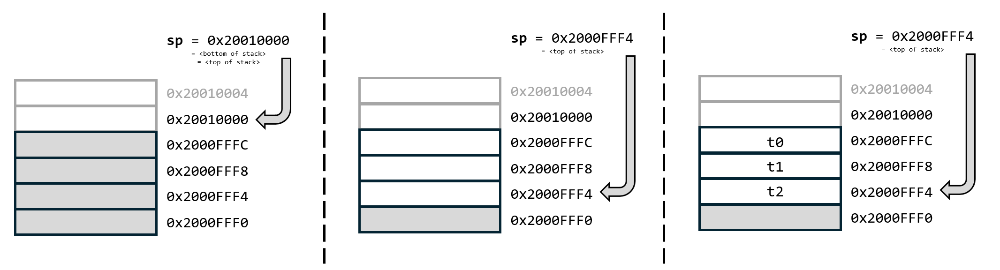

This lecture will focus on Program Control Flow, i.e., how to make jumps in our code, call subroutines, and make function calls. This will include using the ABI conventions for function parameters and return values, understanding how the stack works, and how to deal with register spilling (i.e., what to do when we do not have enough registers). We will round of the lecture with a discussion about arrays and how they are implemented in assembly.
There are only two instructions in RISC-V that perform unconditional
jumps (jal and jalr). These are used for a
number of pseudoinstructions that make the code easier to read. The
table below describes these two instructions.
| Instruction | Mnemonic | Result |
|---|---|---|
jal rd, offset |
Jump and link | rd ← PC+4; PC ← PC+offset |
jalr rd, offset(rs1) |
Jump and link register | rd ← PC+4; PC ← rs1+offset |
The word “Link” in these mnemonics means that we store the return address, so that we can return from the jump later.
There are two versions of the jump and link instruction because the
simpler one, jal, only allows us to jump a certain offset
(which is limited to +/- 1MB) 1 from the current value
of pc. Since our SRAM (where the code normally resides) is
only 128KB in size, that is not normally a problem for us. However, if
we need to jump to code in FLASH memory, the distance would be too far
for jal so we must put our address into a separate
register, and then use jalr, instead. There are other
reasons for using jalr which we will encounter shortly.
Sometimes, all we want to do is jump to some other part of the code. Let’s say you want to make an LED lamp blink continuously as soon as you start your machine. Consider the example below:
<initialization code>
blink:
<code that turns on an LED lamp, waits 1 second, turns it off, waits 1 sec>
j blink // Jump to the "blink" labelHere, when making our jump, we have no interest in what the return
address is (so we do not need “Link”) but the assembler will still
translate this pseudo instruction (j) into the real
instruction (jal):
| Pseudo Instruction | Mnemonic | Translation |
|---|---|---|
j <address or label> |
Jump | jal zero, offset |
| (offset is calculated from current pc by assembler) |
Since we do not need the return address for this pseudo instruction,
jal simply stores it into the zero register
(writes to zero, or x0, are always
ignored).
The offset can be either a label (like in the example),
or an absolute address:
j 0x20000000 // Jump to the start of our program
In either case, the compiler (or linker) will complain if the address
we want to jump to is too far away from the current address (i.e., if
the offset from pc would require > 20 bits). In such
cases, we have to use the jr (Jump Register) instruction
instead.
| Pseudo Instruction | Mnemonic | Translation |
|---|---|---|
jr rs |
Jump | jalr zero, 0(rs) |
If we, for example, knew that we had some useful code at address 0x00000100 (in FLASH memory), we could write:
li t0, 0x00000100 // Load the address into t0
jr t0 // Jump to that addressConditionally jumping based on some condition is called “branching” and we wouldn’t be able to do much with our computers without it. The real instruction that we use for branching are listed in the table below:
| Instruction | Mnemonic | Result |
|---|---|---|
beq rs1, rs2, offset |
Branch if equal | PC ← PC+offset if rs1 = rs2 |
bne rs1, rs2, offset |
Branch if not equal | PC ← PC+offset if rs1 ≠ rs2 |
blt rs1, rs2, offset |
Branch if less than (signed) | PC ← PC+offset if rs1 < rs2 |
bge rs1, rs2, offset |
Branch if greater or equal (signed) | PC ← PC+offset if rs1 ≥ rs2 |
bltu rs1, rs2, offset |
Branch if less than (unsigned) | PC ← PC+offset if rs1 < rs2 (u) |
bgeu rs1, rs2, offset |
Branch if greater or equal (unsigned) | PC ← PC+offset if rs1 ≥ rs2 (u) |
You might think that this looks limited. Why is there no “Branch
Greater Than” or “Branch Less or Equal”? The answer, as usual, is that
this functionality can be implemented with existing instructions. Since
a < b => b > a, bgt rs1, rs2, label (Branch
Greater Than) can be written as blt rs2, rs1, label. There
are pseudoinstructions that cover all of the missing operations:
| Instruction | Mnemonic | Result |
|---|---|---|
bgt rs1, rs2, offset |
Branch if greater than (signed) | PC ← PC+offset if rs1 > rs2 |
ble rs1, rs2, offset |
Branch if less or equal (signed) | PC ← PC+offset if rs1 ≤ rs2 |
bgtu rs1, rs2, offset |
Branch if greater than (unsigned) | PC ← PC+offset if rs1 > rs2 (u) |
bleu rs1, rs2, offset |
Branch if less or equal (unsigned) | PC ← PC+offset if rs1 ≤ rs2 (u) |
Many of these instructions exist in a signed and an unsigned version
(e.g., blt and bltu). This is necessary since
the processor does not know if you consider the value in a register to
be a signed or an unsigned number. Consider the instruction
blt x1, zero. If x1 contains
0xFFFFFFFB, it is less than zero if we consider it a signed
integer (-5), but much more than zero if we consider it
unsigned (4294967291).
Additionally, there are a number of pseudoinstructions that compare a
register’s value to zero. These are just for convenience and are easily
implemented using the correspoding instructions and using
zero as one of the operands:
| Instruction | Mnemonic | Result |
|---|---|---|
beqz rs, offset |
Branch if equal to zero | PC ← PC+offset if rs = 0 |
bnez rs, offset |
Branch if not equal to zero | PC ← PC+offset if rs ≠ 0 |
bgtz rs, offset |
Branch if greater than zero | PC ← PC+offset if rs > 0 |
bltz rs, offset |
Branch if less than zero | PC ← PC+offset if rs < 0 |
Let’s put this to use. We want to calculate the factorial of 5 (5! = 5 * 4 * 3 * 2 * 1). In C, or any C-like high-level language, this could look like:
int y = 1;
for(int i=1; i<=5; i++) {
y = y * i;
}We can write this same program in RISC-V assembly language as (read and make sure you follow):
li t0, 1 # Use register t0 for `y`, and set it to 1
li t1, 1 # Use register t1 for `i`, and set it to 1
forloop:
li t2, 5 # Put the value 5 in a temporary register
bgt t1, t2, end # Check if `i` is more than 5
# and jump to `end` if it is
mul t0, t0, t1 # y * i -> y
addi t1, t1, 1 # i++
j forloop # Repeat
end:
# t0 now contains the answer.Note that there are no immediate versions of the branch
instructions. We cannot write bgt t1, 5, end, for example.
You have to put the value you want to compare against into a register
first.
💡 Note: If you’ve worked with other CPU architectures (perhaps in a previous course), you may notice that branch handling is different on RISC-V. In many older architectures, a branch instruction is preceded by a compare instruction, which compares two values using the ALU and sets condition flags (e.g., Negative, Zero, etc.) in a flag register. In contrast, RISC-V performs these comparisons directly as part of the branch instruction. This design avoids the need for a global condition-code register, simplifying the hardware and reducing potential pipeline dependencies.
Before we move on to discuss how function calls are implemented, let’s quickly recap the Stack and learn how it is used on a RISC-V architecture. The stack is a memory area where computer programs can store temporary data. The number of registers on any CPU are limited, so sometimes we need to push data to memory, temporarily, and then pop (or pull) it back into registers when we need it.
On many architectures, the process might look like this:
<code that does stuff>
<we need to perform a calculation, but we have no free registers>
PUSH {t0, t1, t2} # Copy the contents or registers t0, t1, and t2 to the stack
<do calculations that might overwrite t0, t1 and t2>
POP {t0, t1, t2} # Copy the values from the stack, back into t0, t1, and t2A stack has one associated register called the stack pointer
(the RISC-V ABI convention is to use register
x2/sp). This register always holds the address
to the top of the stack, i.e., where the last value was pushed.
The stack pointer needs to be initialized to point at the end
of some memory area that is known to be free (called the bottom
of the stack). By convention, the stack grows downward, from higher
to lower memory addresses. Then, when we need to store a value (let’s
say a 4 byte integer) on the stack, we can store it in memory, at the
address held by sp, and then reduce the address stored in
sp by 4 bytes.
On many architectures, push and pop are actual
instructions, implemented by the hardware, but in RISC-V it is done
explicitly with existing instructions. To push register t0
to the stack, you would write:
addi sp, sp, -4 # Reduce the stack pointer so it points to where we will store t0
sw t0, 0(sp) # Store t0 at the address held by spAs you will see soon, we often want to push several registers to the
stack at the same time. If we needed to push t0,
t1, and t2 to the stack, we could write:
0: addi sp, sp, -12 # Reduce the stack pointer so it points to where we will store
1: # the LAST value we push (t2)
2: sw t0, 8(sp) # Store the three registers
3: sw t1, 4(sp)
4: sw t2, 0(sp)
5:
The process is also illustrated in the Figure above.
To pop the values, we just do the same thing in reverse. We first use the current address in the stack-pointer to read out the last three values that were pushed, and then we increase the stack pointer. We do not remove the values from the stack, we just move the pointer, but any subsequent push operation will overwrite that memory:
lw t2, 0(sp) # Read the values back into registers
lw t1, 4(sp)
lw t0, 8(sp)
addi sp, sp, 12 # Restore the stack pointer to where it was before we pushedMost high-level languages have the concept of functions (sometimes called subroutines). A function takes a number of parameters and returns a value. The assembly language does not have function calls built into the language but even when writing pure assembly we often want to divide code into functions.
Additionally, we want to be able to mix languages. Sometimes we want to write a function in assembly, and call it from our C code, or vice versa. For that to work, it is important that we, as assembly programmers, follow exactly the same rules as the C compiler does.
Therefore, there are several conventions (described by the ABI) that define how function calls should be done. Let us consider a simple function that takes two parameters and returns the smallest:
int min(int a, int b) {
if(a < b) return a;
else return b;
}How can we write this function in RISC-V assembly? How are the
arguments a and b passed to the function? How
do we return a value? All of this is described in detail in the ABI
specification, and we will go through the basics here.
When calling a function we need to be able to return from that
function, and the convention is that the caller (the function
that makes the function call) saves the return address in register
ra (The ABI name for register x1). Assume that
there is a label min (somewhere in the code) that
corresponds to the address where the function code begins. If the
distance from the calling instruction to the function fits in the 20-bit
offset of the jal ra, min instruction, we could use that
directly. Otherwise, we have to first calculate the full target address
into a register, and then use the jalr instruction.
Whether or not the function is close enough could be hard to know in
some cases. Fortunately, the assembler will accept a simple
pseudoinstruction, call, which puts the return address into
ra and generates the proper instructions (jal,
or auipc+jalr) as needed.
Since the return address is available in ra, returning
from a function can always be achieved with:
jalr zero, 0(ra). There is also a pseudoinstruction
ret that translates into the same thing.
So to call and return from a function we can write:
call min # Stores the return address in ra and jumps to min
<min will return to here>
...
min:
<definition of min goes here>
ret # Return from functionIn simpler cases, when there are at most eight parameters and each
parameter fits into 4 bytes (one 32-bit register), the convention for
passing arguments to a function is simple: The parameters are stored, in
order, in the a0-a7 registers (as many of them
as needed) before calling the function. As long as the return value fits
in a single 32-bit register, it is stored in a0 before
returning from the function.
There are a few things to note about this:
char or short). In
assembly, such variables are, by convention, kept in one 32-bit register
each even if several of them could be packed into a single
register.a registers and sometimes pushed
onto the stack instead. We will cover some of these cases later in this
course.We are now ready to implement our min function and call
it:
li a0, 20 # Load the value 20 into register a0
li a1, 10 # Load the value 10 into register a1
call min # Stores the return address in ra and jumps to min
# a0 should now contain the smaller value of 10 and 20
...
min:
blt a0, a1, min_end # If a0 is less than a1, we can return because the smallest value is already in a0
mv a0, a1 # Otherwise, copy the value of a1 into a0 (the return value)
min_end:
ret # Return from function (the return value should now be in a0)There is one more important thing to consider when writing, or calling, functions in assembly. We will illustrate this by an example.
Let’s say you have written the function
int max(int a, int b) in C and that you are linking the
compiled code with your assembly program 2.
You are now given the task to write an assembly program that finds the
largest of the three values stored in registers
t0, t1, and t2. I.e., we want to
calculate max(max(t0, t1), t2)
You might write the following code:
mv a0, t0 # Use t0 as the first parameter
mv a1, t1 # and t1 as the second parameter
call max # After this line, the maximum of t0 and t1 is in a0
# Since a0 is already max(t0, t1) we do not have to do anything for the first parameter
mv a1, t2 # Use t2 as the second parameter
call max # After this line a0 should contain max(max(t0, t1), t2)...
# Or should it...There is a potential bug in this program. Can you spot it? That’s
right: We do not know what happens in max. It might
have overwritten our t2 register! This is a general
problem. When writing code, we can not feasibly read through every
function we call, just to find out if it might overwrite any register we
want to preserve.
We could save all registers, before calling any
function, but that would almost always be a waste. In the
min function that we wrote earlier, we only overwrite
a0, so saving every single register every time we need to
call min would be very silly.
An alternative would be to let the callee (the function
being called) save the registers. When writing the
min function, we know that we only need to overwrite the
a0 register, so we would only save that. But then, another
function that uses many registers would have to save all of them,
regardless of whether they are important to the calling function or
not.
The solution to this problem is a compromise. The ABI conventions say
that the calling function (the caller) is responsible
for saving t0-t6, a0-a7, and ra,
if it needs them to be preserved. The callee is responsible for
saving any other register, if it might modify them.
Put differently, whenever calling a function, you have to think about
which of t0-t6 and a0-a7 you might need later,
and save them. Whenever you are writing a function, and use any of the
other registers, you have to make sure that you save them
first, and restore them before returning.
💡 Note: These rules might seem arbitrary, but have proven to work well for minimizing redundant register saving in most cases. When writing performance-critical code, an optimizer can often find remaining redundant register saving and remove it.
So, for our example to be guaranteed to work, we need to save
t2 to the stack before calling max the first
time. Note that max might also overwrite a0,
a1, a2, t1, and ra
but since we do not need those values any more we do not need to save
them:
mv a0, t0 # Use t0 as the first parameter
mv a1, t1 # and t1 as the second parameter
addi sp, -4 # Decrease the stack pointer
sw t2, 0(sp) # Save t2 for later
call max # After this line, the maximum of t0 and t1 is in a0
# Since a0 is already max(t0, t1) we do not have to do anything for the first parameter
lw t2, 0(sp) # Restore t2 from the stack
addi sp, 4 # And increase the stack pointer
mv a1, t2 # Use t2 as the second parameter
call max # After this line a0 contains max(max(t0, t1), t2)...In real programs, any code you write will usually be part of a function which means that you are always writing code for a callee, but sometimes that function calls another function, making it the caller.
To keep things manageable, an assembly programmer will usually follow
a simple procedure when writing a function f:
t (temporary) registers.
You can use them freely without pushing to the stack, as the function
that called f will have saved them if it needed to.s register instead. The function you call will make sure
that it is not overwritten.s register, you have to make sure to save
it the first thing you do in the function, and restore it before you
return.Let us revisit the problem above. We now want to write a function
int max_of_three(int a, int b, int c), using the
int max(a, b) function:
# int max_of_three(int a, int b, int c)
# =================================================================================
# a0: a
# a1: b
# a2: c
max_of_three:
# ===== PROLOGUE ================================================================
# Save any callee saved register that might be overwritten by this function
addi sp, sp, -8 # Allocate room for two words on stack
sw s0, 4(sp) # Save s0 in one slot
sw ra, 0(sp) # Save ra, since it will be overwritten by
# `call`
# ===============================================================================
mv s0, a2 # s0 <- c
call max # a0 <- max(a, b)
mv a1, s0 # a1 <- c
call max # a0 <- max(max(a,b),c)
# ===== EPILOGUE ================================================================
# Restore all values we pushed in the beginning and return
lw s0, 4(sp)
lw ra, 0(sp)
addi sp, sp, 8
#================================================================================
retIn this version, we save the temporary register to one of the saved
registers, instead of putting it directly on the stack. Since we use an
s register, we have to save that on the stack,
however, so we do not reduce the stack traffic. Both ways are allowed,
but writing your code in this way makes it much easier to keep track of
what is on the stack (it only changes as you enter a function), and
makes the code easier to read.
We have seen how we can have variables in memory and load them into registers already, but we often need a list of variables. A list of variables of the same type are often called arrays, as you have probably seen in previous programming courses. In C (and similarly in C++ and Java), some example code that uses an array could be:
char numbers[10]; // Allocate memory space for 10 chars (bytes)
numbers[0] = 10; // Write a value into the first element of the array
numbers[1] = 20; // ... second ....
...
numbers[9] = 100; // ... last ...
char v = numbers[9]; // Read the last element of the array into another variableWe will return to arrays in C later in the course, but for now we shall see how arrays are implemented in assembly.
If we want to allocate an array of chars globally (i.e., that exists throughout the programs lifetime and is available to any function), this is very similar to allocating a single-byte variable:
numbers: .byte 10, 20, 30, 40, 50This line will allocate space for 5 bytes (starting at the current address, which depends on preceding instructions in the code) and initialize them to the given values.
If we want to allocate an empty (i.e., uninitialized) array, we can write:
numbers: .space 5 # Allocate 5 bytes for the arrayLoading or storing an element from/to the array is done in the same
way that we accessed a single variable in the previous lecture. Let’s
say we want to copy the value of numbers[4] into
numbers[0]
la t0, numbers # Load the address to where the array starts into t0
lb t1, 4(t0) # Load numbers[4] (the fifth element) into t1
sb t1, 0(t0) # And store it into numbers[0]
numbers: .space 5 # Allocate 5 bytes for the arrayIn other words, we put the starting address of the array
into a register, and then access individual elements with an
offset from that address. When our array consists of
char (bytes) the offset is the same as the element. Let’s
do the same thing for an array of short (halfwords, 2
bytes):
la t0, numbers # Load the address to where the array starts into t0
lh t1, 8(t0) # Load numbers[4] (the fifth element) into t1
sh t1, 0(t0) # And store it into numbers[0]
.align 1 # Make sure address of numbers is divisible by 2 (since halfwords)
numbers: .space 10 # Allocate 10 bytes for the arrayFirstly, we have to allocate twice as much space (10 bytes for 5
elements, since each short is two bytes). Secondly, we now
use the offset 8 to access element number 4, again, this is because each
element takes up 2 bytes, so the fifth element lies 2*4 bytes from the
arrays starting address 3.
Also, remember that we now need to use lh (Load
Halfword) instead of lb (Load Byte), and that we need to
use .align to make sure that the array starts at an address
that is divisible by 2 (see previous Lecture).
We have seen how to access individual elements in an array, but how
do we loop over all (or some) elements? Usually, we will put the
starting address to the array in one register and then add
the offset to that. In the following example, we have a list of 10
numbers and we want to calculate their sum:
int sum = 0;
for(int i=0; i<10; i++) {
sum = sum + numbers[i];
}In assembly, we could write this as:
1: li t0, 0 # We use t0 for i
2: li t1, 0 # We use t1 for the sum
3: la t2, numbers # t2 <- address of first element in array
4: loop:
5: li t3, 4 # t3 <- 4, the number of bytes per element
6: mul t3, t0, t3 # t3 <- i * 4
7: add t3, t2, t3 # t3 <- address of array + i * (4 bytes)
8: lw t3, 0(t3) # t3 <- numbers[i]
9: add t1, t1, t3 # add element to sum
10: addi t0, t0, 1 # i++
11: li t3, 10 # t3 <- 10
12: blt t0, t3, loop # iterate while i < 10
13:
14: done: # t1 now contains the sum
15:
16: .align 2 # Make sure our numbers are aligned to 4 bytes
17: numbers: .word 2, 4, 6, 8, 0, 1, 2, 3, 4, 5 # Allocate 10*4 bytes for the arrayNote that we have to manually multiply the offset by the size of the
element type, to get the correct address. In the example above, we did
this with the mul instruction (on lines 5-6), but we can do
it slightly more efficiently with:
5: slli t3, t0, 2 # Shifting left by two steps is the same as multiplying by 4Sometimes we need an array locally in a function. Perhaps the function should read 10 words from disk, calculate the sum, and return the sum. Since the memory for the array is only needed until the function returns, that array will be put on the stack instead. Consider the example in C:
void f() {
int array[10];
<read data into array>
<calculate sum of array>
return sum;
}In assembly, this could look like:
function:
addi sp, sp, -40 # Make room on the stack for 10 integers
mv t0, sp # t0 now holds the address to the start of the array
<read data into array>
<calculate sum of array>
addi sp, sp, 40 # restore the stack
retWe will se later in the course how the stack is used for all local variables (unless they only exist in registers) when compiling C code.
It is very common that we want to send an array as a parameter to a
function. We might, for instance, want to write a function that
calculates the sum of an arbitrary array of integers. Since an array
might consist of hundreds or thousands of elements, it does not make
sense to try to pack them into the a registers. It usually
also does not make sense to copy the array into the stack (we would have
to copy thousands of bytes just to call a function). Instead, the usual
approach to “sending” an array to a function is to simply send the
starting address and the size of the array as parameters to the
function:
main:
la a0, numbers # Load address of array as first parameter
li a1, 10 # Size of array as second parameter
call sum
# a0 now contains sum of numbers
# int sum(int array[], int size)
# a0: starting address of array
# a1: size (number of elements) of array
sum:
li t0, 0 # Calculating sum in t0
sum_loop:
lw t1, 0(a0) # Read element
add t0, t0, t1 # Add to sum
addi a0, a0, 4 # Move a0 so it points at next element
addi a1, a1, -1 # Reduce size of (remaining) array
bnez a1, sum_loop # If we have elements left, loop
mv a0, t0 # Return the sum
ret
.align 2 # Make sure our numbers are aligned to 4 bytes
numbers: .word 2, 4, 6, 8, 0, 1, 2, 3, 4, 5 # Allocate 10*4 bytes for the arrayThis lecture almost concludes our assembly adventures, as we will start looking into C programming in the next lecture. If you want more, or are looking for in-depth details, we can recommend the free online book: An Introduction to Assembly Programming with RISC-V.
Links: RISC-V Cheat Sheet , RISC-V ABI
Text and excercises in the Workbook (Arbetsboken) Chapter 1, Pages 17-24 Chapter 1, Pages 34-56
If you are very awake, you might have noticed that a
20-bit offset should only allow us to jump +/- 0.5MB. However, since all
instructions are guaranteed to be 2-byte aligned, the offset in the
machine instruction is multiplied by 2 before being added to
pc.↩︎
You don’t know how to do that just yet, but you will in a few lessons time.↩︎
If you are confused about numbers[4] being
the fifth element, this is a good time to get used to it :). Since C
uses zero-based indexing, numbers[0] is the first
element, numbers[1] is the second, and so on.↩︎